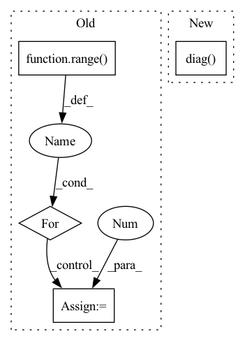

Pattern ID :4884

Before Change
perm_mask = perm_mask.contiguous()
target_mapping = torch.zeros((input_ids.shape[0], decoder_input_ids.shape[1], decoder_input_ids.shape[1]),
dtype=torch.float).to(self.device)
for index in range(self.max_seq_length-1):
target_mapping[:, index, index] = 1.0
target_mapping = target_mapping.contiguous()
outputs = self.decoder(decoder_input_ids,
labels=labels, perm_mask=perm_mask, target_mapping=target_mapping)
After Change
perm_mask = perm_mask.triu(diagonal=1)
target_ones = torch.ones(input_ids.shape[1] - 1).to(self.device)
target_ones = target_ones.diag(1)[:-1]
target_mapping = target_ones.expand(input_ids.shape[0], -1, -1)
outputs = self.decoder(input_ids, attention_mask=attn_masks, perm_mask=perm_mask, target_mapping=target_mapping)
In pattern: SUPERPATTERN
Frequency: 3
Non-data size: 4
Instances
Fragment ID: 17262230
Project Name: rucaibox/textbox
Commit Name: 53c76331ad0c943d52e3310affd25d0e505eb830
Time: 2021-01-19
Author: 1020139164@qq.com
File Name: textbox/model/LM/xlnet.py
M Class Name: XLNet
N Class Name: XLNet
M Method Name: calculate_loss(4)
N Method Name: calculate_loss(3)
M Parent Class: UnconditionalGenerator
N Parent Class: UnconditionalGenerator
M File Name: textbox/model/LM/xlnet.py
N File Name: textbox/model/LM/xlnet.py
M Start Line: 90
M End Line: 113
N Start Line: 72
N End Line: 111
'>
Before Change
num = 0
den = 0
for i in range(len(w)):
for j in range(len(w)):
if i == j:
weight = 1
else:
weight = 0
num += weight*cm[i][j]
den += weight*E[i][j]
After Change
num_samples = cm.sum()
total_agreements = cm.diag().sum()
agreements_chance = (act_hist * pred_hist) / num_samples
agreements_chance = agreements_chance.sum()
kappa = (total_agreements - agreements_chance) / (num_samples - agreements_chance)
'>
Fragment ID: 17262238
Project Name: biasvariancelabs/aitlas
Commit Name: f280521965487b4d4a1efb66b97b0bd8287830f5
Time: 2021-05-14
Author: elenamerdzanovska@yahoo.com
File Name: aitlas/base/metrics.py
M Class Name: MultiClassRunningScore
N Class Name: MultiClassRunningScore
M Method Name: kappa(1)
N Method Name: kappa(1)
M Parent Class: RunningScore
N Parent Class: RunningScore
M File Name: aitlas/base/metrics.py
N File Name: aitlas/base/metrics.py
M Start Line: 139
M End Line: 161
N Start Line: 139
N End Line: 151
'>
Before Change
cov_ = generate_simple_data(n, view_features, view_sparsity)
weights = np.random.rand(view_p, k)
for _ in range(k):
if sparsity > 0:
if sparsity < 1:
sparsity = np.ceil(sparsity * view_p).astype("int")
// first = np.random.randint(N - sparse_variables_1)
// up[:first, _] = 0
// up[(first + sparse_variables_1):, _] = 0
mask = np.concatenate(([0] * sparsity, [1] * (view_p - sparsity))).astype(bool)
np.random.shuffle(mask)
weights[mask, _] = 0
weights = _decorrelate_dims(weights, cov_)
weights /= np.sqrt(np.diag((weights.T @ cov_ @ weights)))
true_features.append(weights)
After Change
np.random.shuffle(mask.flat)
weights = weights * mask
weights = _decorrelate_dims(weights, cov_)
if np.sum(np.diag((weights.T @ cov_ @ weights)) == 0) > 0:
print()
weights /= np.sqrt(np.diag((weights.T @ cov_ @ weights)))
true_features.append(weights)
'>
Fragment ID: 17262234
Project Name: jameschapman19/cca_zoo
Commit Name: fcbea373cbd6a237b62fdf365a4c7a09e46701ef
Time: 2021-05-06
Author: james.chapman.19@ucl.ac.uk
File Name: cca_zoo/data.py
M Class Name: AnonimousClass
N Class Name: AnonimousClass
M Method Name: generate_covariance_data(8)
N Method Name: generate_covariance_data(8)
M Parent Class:
N Parent Class:
M File Name: cca_zoo/data.py
N File Name: cca_zoo/data.py
M Start Line: 43
M End Line: 68
N Start Line: 35
N End Line: 71